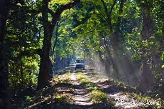
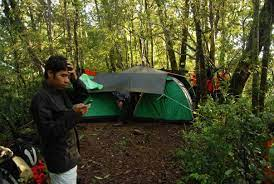

Within an hour and half drive from Jakarta, tucked behind the new-to-be-developed compound of Trump Development in Lido, lies Bodogol National Park. It’s one of the 54 national parks in Indonesia. I was pleased to see a lush green forest covering the area of 20 hectares which are relatively untouched by the weekenders from Jakarta. Despite its proximity to Jakarta, Bodogol was relatively unknown; perhaps, it’s not easily accessible.
The road heading to the park was not paved. It’s a muddy and gravel road, passable only by motorbikes or 4WD vehicles. As we drove towards the park, not only our eyes were rewarded by the sight of greenery, but also our lung was pampered by the oxygen-rich fresh air. Forest has been my sanctuary and my refuge to keep my sanity intact. I could live not being able to roam around the city, but not being outdoor just to inhale fresh air in the forest was detrimental to my mental health. As we were reaching the park, we came across a group of pilot students walking towards the park for survival skill training.
Located at the foot of Mount Pangrango in Sukabumi Regency, there is not much information about the park; other than the fact it is home to some 4,000 Javan Gibbons, Javan leopards and many types of tropical birds, such as Eagle, dove, parrot, Owl, Blue Robin and many other. Only later on I learned there was a Javan Rehabilitation Center, established in 2003, whose population were mainly confiscated from the illegal traders. In the wild, Javan Gibbons live in a small group, unlike its distant cousin, Proboscis monkeys which typically live in large communities. We were lucky to have spot two families of Javan Gibbon perching at the trees as we trekked along Canopy Trail Ciwalen, heading towards the 130-meter suspension bridge.
There are three waterfalls in the park. The first one was the largest, Cisadane, which was the toughest to reach; it’s literally off beaten track given the steep and slippery trek one has to take, not to mention a few streams that one has to pass. The other one which was equally difficult to reach because of the challenging terrain was Cisuren Waterfall.
Obviously these two were not the ideal options for I and my friend.We picked a much easier route to reach, Cikante Waterfall. The walk was pleasant among pine trees as we could hear the sound of birds chirping as well as the sound of pine trees whispering and rustling leaves, resembling the sound of a waterfall, creating an impression we were close to our destination! As quoted in the book "A Day of Sunshine" by Henry Wadsworth Longfellow:

I hear the wind among the trees
Playing celestial symphonies
I see the branches downward bent
Like keys of some great instrument
Cikaweni waterfall was a 5-meter height waterfall, of which pristine water flowing through a nearby village used for daily consumption. It is said that the people at the village had resisted selling the water to the mineral water company. We were glad to see there was no one else around, and we had the place to ourselves. In no time, we all dipped into the pool and had water therapy as the water fell hard into our back, creating sensational natural massage. I could understand why the locals believe anyone who dips in thisReturning from the waterfall, we headed towards a camping ground outside the park where GoEscape.id’s 4FWD jeep parked and set up the rooftop tent. The location was a perfect spot for sunset viewing and was equipped with bathroom. We simply chilled by enjoying our coffee while viewing the sun going down. It immediately washed away of the tension and anxiety from my body.
Just as John Muir said "As long as I live, I'll hear waterfalls and birds and winds sing"
Melissa is a Canadian doll. She has no filter and is such a warm hearted individual.
YOU MUST catch her on Snapchat or Youtube. She's either hitchhiking though SE Asia or sharing her travel shenanigans.
She’s such a talented individual and has truly proven that hard work pays off.
Melissa has been published on Huffington Post, Matador Network, Thought Catalog and much, much more. She’s a true female backpacker and an inspiration!
Lili is a Belgian chick who is another kick ass travel blogger!
She was recently named #25 Top Travel Blogger To Follow In 2016. Lili also has no filter and does a wonderful job at sharing her opinion about travel.
She's also a fellow Travello App travel blogger.
Gloria (aka glo) is an Arizona native and is the realest of the realest!
Never afraid to voice her an opinion, she is a talented writer who creates great content.
She also has a great eye for photography. She's worked with top travel photographers and writes for Huffington Post, Thought Catalog, and Matador Networks.
She’s also one of the BEST selfie-takers I know.